midwest |>
select(state, county, percollege, poptotal, area) |>
head(10)6 Distributions
6.1 Why distributions matter
A distribution shows how values of a variable are spread out. Before comparing means, fitting models, or making polished charts, it is often useful to ask simpler questions:
- What values are common?
- Are there extreme values?
- Is the variable symmetric or skewed?
- Do groups have similar or different spreads?
- Are there gaps, clusters, or unusual cases?
Distribution plots are especially useful during exploratory data analysis.
The previous chapters focused mostly on relationships between variables: income and life expectancy, partisanship and ideology, or groups separated by color and facets. This chapter asks a different kind of question. Instead of starting with a relationship, it starts with one variable and asks what its values look like.
6.2 Histograms
A histogram divides a continuous variable into bins and counts how many observations fall in each bin.
The midwest dataset is included with ggplot2. It has one row per county in five Midwestern states.
We will start with percollege, the percentage of adults in each county with a college degree.
ggplot(
data = midwest |> filter(!is.na(percollege)),
mapping = aes(x = percollege)
) +
geom_histogram() +
labs(
title = "Distribution of County College Education Rates",
x = "Percent with college degree",
y = "Number of counties"
) +
theme_bw()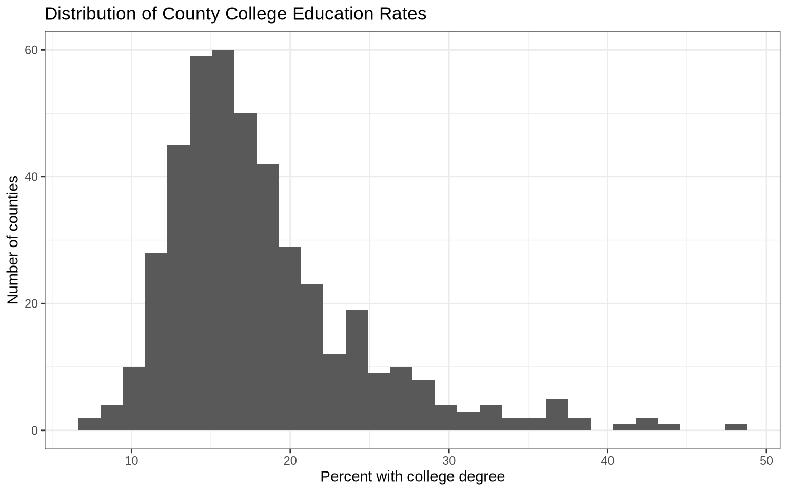
When we do not set the number of bins, ggplot2 chooses a default. That default is not always the best choice, so it is worth trying several values.
ggplot(
data = midwest |> filter(!is.na(percollege)),
mapping = aes(x = percollege)
) +
geom_histogram(bins = 25, fill = "steelblue", color = "white") +
labs(
title = "Distribution of County College Education Rates",
subtitle = "Using 25 bins",
x = "Percent with college degree",
y = "Number of counties"
) +
theme_minimal()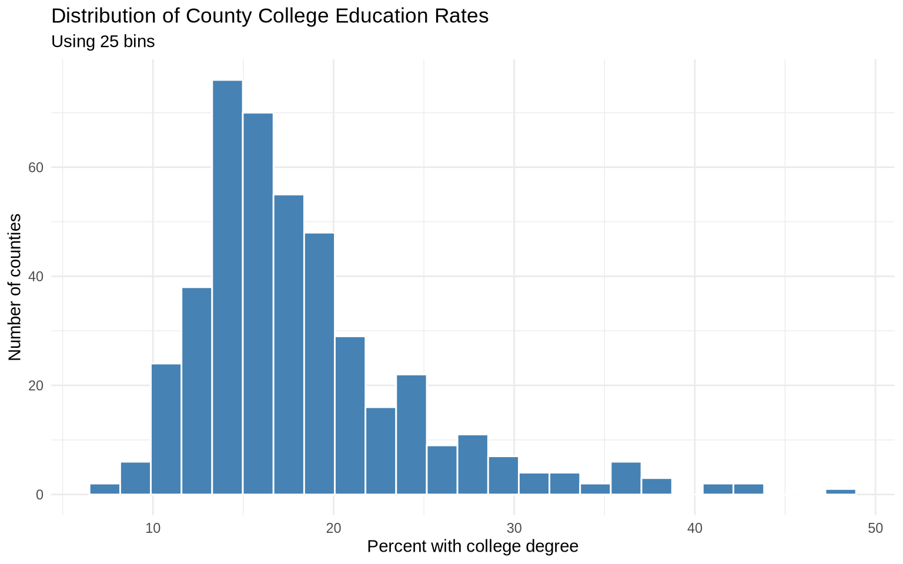
Changing the number of bins changes the visual summary. Very few bins can hide structure. Too many bins can make the plot look noisy. Histograms are useful for seeing skew, clustering, and unusual tails.
6.3 Comparing histograms
We can compare distributions across groups by mapping a group to fill and using transparency.
oh_wi <- midwest |>
filter(state %in% c("OH", "WI"), !is.na(percollege))
ggplot(data = oh_wi, mapping = aes(x = percollege, fill = state, color = state)) +
geom_histogram(alpha = 0.3, bins = 25, position = "identity") +
labs(
title = "County College Education Rates in Ohio and Wisconsin",
x = "Percent with college degree",
y = "Number of counties",
fill = "State",
color = "State"
) +
theme_minimal()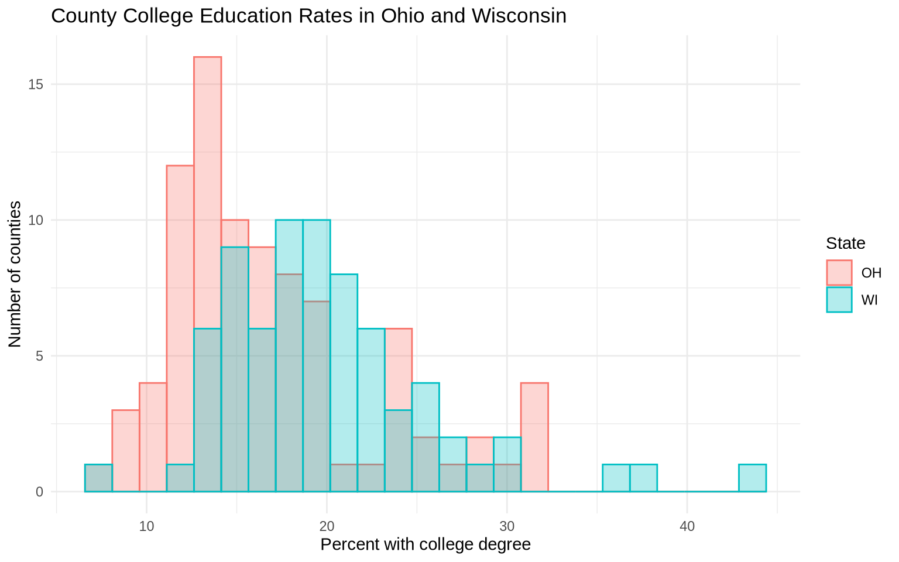
Overlaid histograms are compact, but they can be difficult to read when the groups overlap.
Small multiples are often clearer.
ggplot(data = oh_wi, mapping = aes(x = percollege)) +
geom_histogram(bins = 25, fill = "gray50", color = "white") +
facet_wrap(~ state) +
labs(
title = "County College Education Rates in Ohio and Wisconsin",
subtitle = "Same x and y scales in each panel",
x = "Percent with college degree",
y = "Number of counties"
) +
theme_minimal()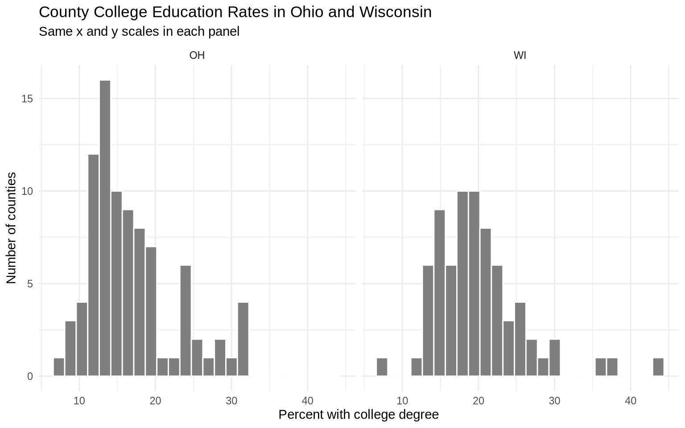
Because the panels share scales by default, the two histograms can be compared directly.
6.4 Density plots
A density plot is a smoothed version of a distribution. Instead of showing counts in bins, it estimates the shape of the distribution.
ggplot(data = midwest, mapping = aes(x = area)) +
geom_density(fill = "gray70", color = "gray20", alpha = 0.6) +
labs(
title = "Density of County Area",
x = "Area",
y = "Density"
) +
theme_minimal()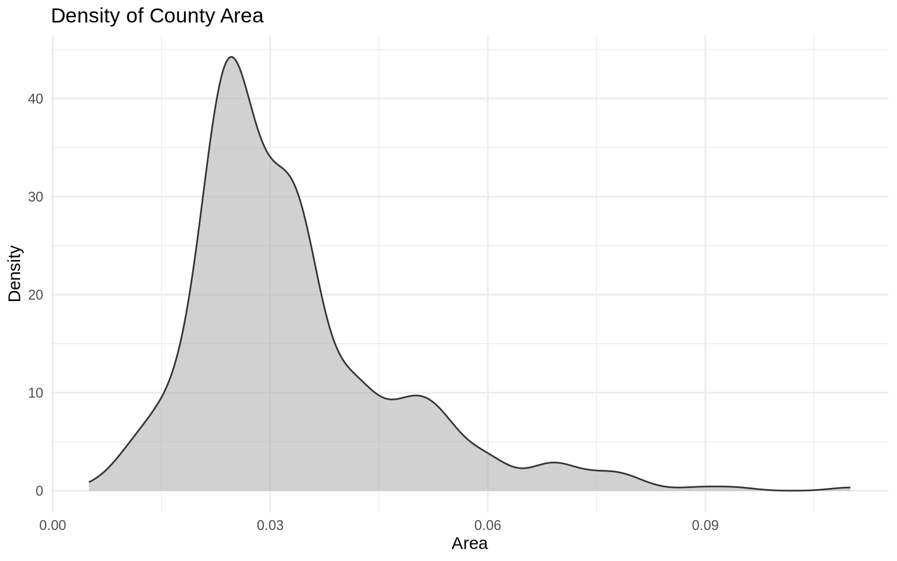
Density plots are useful for comparing shapes across groups.
ggplot(data = midwest, mapping = aes(x = area, fill = state, color = state)) +
geom_density(alpha = 0.25) +
labs(
title = "County Area by State",
x = "Area",
y = "Density",
fill = "State",
color = "State"
) +
theme_minimal()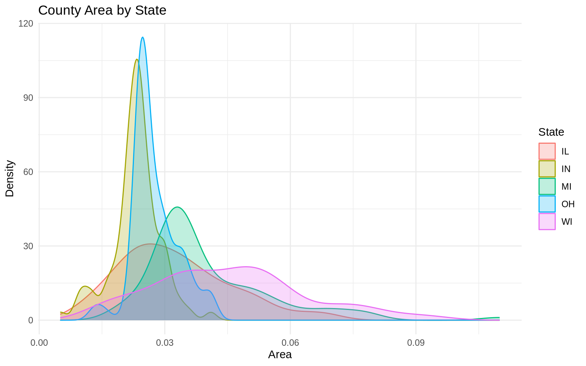
When there are several groups, faceting can again reduce clutter.
ggplot(data = midwest, mapping = aes(x = area, fill = state)) +
geom_density(alpha = 0.5, show.legend = FALSE) +
facet_wrap(~ state) +
labs(
title = "County Area by State",
x = "Area",
y = "Density"
) +
theme_minimal()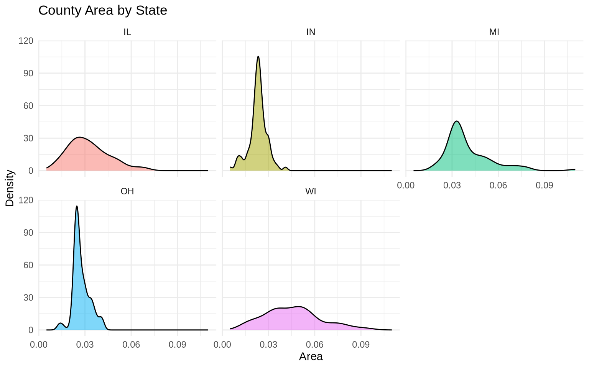
6.5 Boxplots
Boxplots summarize a distribution with a median, interquartile range, whiskers, and outliers. They are compact and good for comparing many groups.
ggplot(data = mpg, mapping = aes(x = class, y = hwy)) +
geom_boxplot() +
labs(
title = "Highway Fuel Economy by Vehicle Class",
x = "Vehicle class",
y = "Highway miles per gallon"
) +
theme_minimal()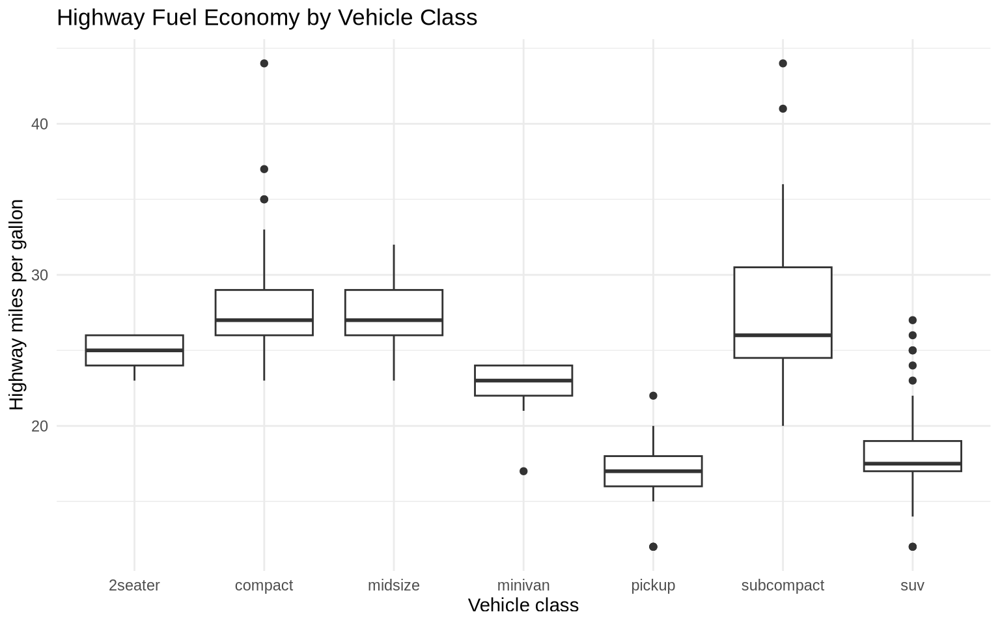
The x-axis is crowded. We can reorder vehicle classes by median highway MPG and flip the coordinates.
ggplot(data = mpg, mapping = aes(x = reorder(class, hwy, FUN = median), y = hwy)) +
geom_boxplot(fill = "steelblue", alpha = 0.7) +
coord_flip() +
labs(
title = "Highway Fuel Economy by Vehicle Class",
subtitle = "Classes ordered by median highway MPG",
x = "Vehicle class",
y = "Highway miles per gallon"
) +
theme_minimal()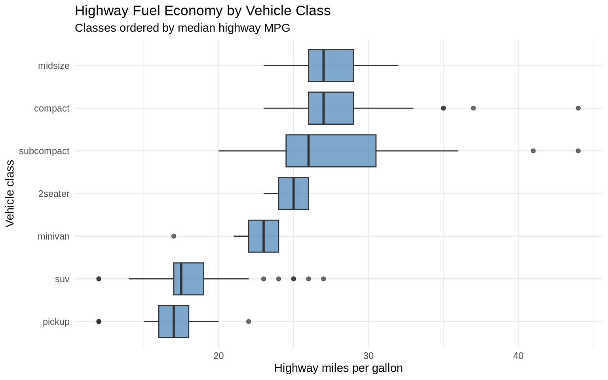
Boxplots hide individual observations, but they make the comparison of medians and spreads easy.
6.6 Adding Individual Points With Jitter
Boxplots are compact, but they can hide how many observations are behind each summary. geom_jitter() adds individual points with a small amount of random horizontal movement so points do not sit directly on top of each other.
mpg |>
ggplot(aes(x = reorder(class, hwy, FUN = median), y = hwy)) +
geom_boxplot(fill = "gray85", outlier.shape = NA) +
geom_jitter(width = 0.15, alpha = 0.45, color = "steelblue") +
coord_flip() +
labs(
title = "Boxplots With Individual Vehicles",
subtitle = "Jittered points show the observations behind the summary",
x = "Vehicle class",
y = "Highway miles per gallon"
) +
theme_minimal()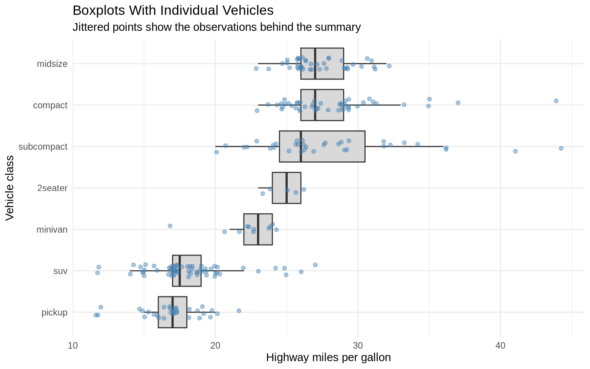
The width argument controls how far points can move side to side. Jittering is useful when many observations share similar values and would otherwise overlap.
6.7 Ridge plots
Ridge plots stack density plots vertically. They are useful when you want to compare many distributions and still see the shape of each one. They use geom_density_ridges() from the ggridges package.
ggplot(mpg, aes(x = hwy, y = class, fill = class)) +
ggridges::geom_density_ridges(scale = 0.9, show.legend = FALSE) +
labs(
title = "Highway Mileage by Vehicle Class",
x = "Highway miles per gallon",
y = "Vehicle class"
) +
theme_minimal()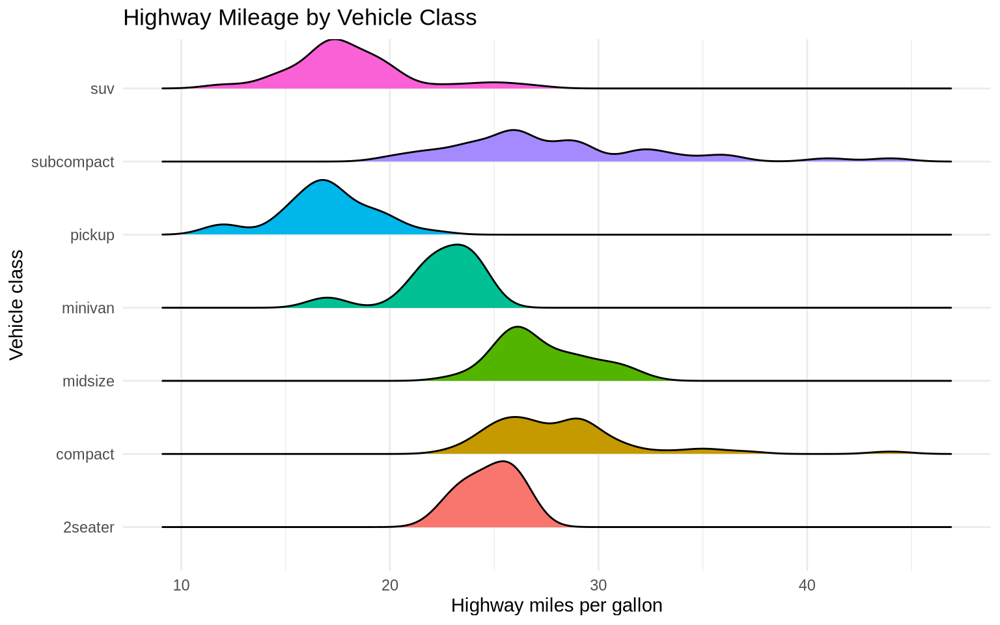
Ridge plots work best when there are enough categories to make a single boxplot crowded, but few enough that each density still has room to be readable.
6.8 Distributions in Gapminder
Distribution plots can also help before making cross-national comparisons.
gap_2007 <- gapminder |>
filter(year == 2007)
ggplot(data = gap_2007, mapping = aes(x = lifeExp)) +
geom_histogram(bins = 25, fill = "gray45", color = "white") +
labs(
title = "Distribution of Life Expectancy",
subtitle = "Countries in 2007",
x = "Life expectancy",
y = "Number of countries",
caption = "Source: Gapminder."
) +
theme_minimal()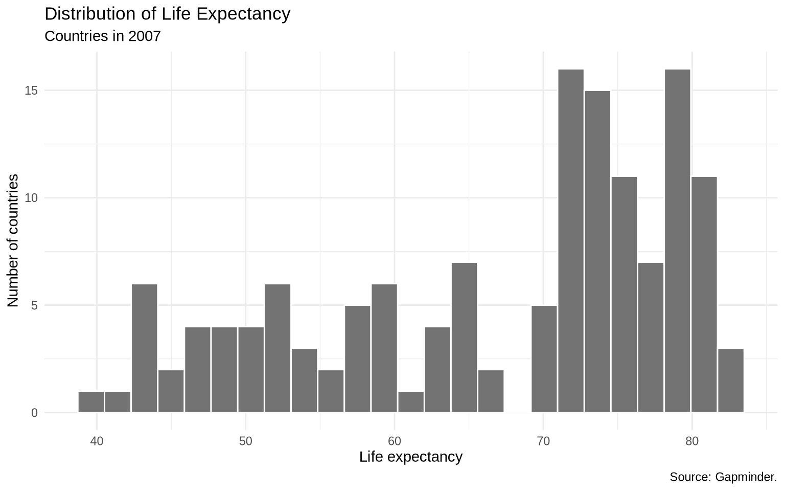
Now separate by continent. Faceted histograms keep the same geom but split the data into panels.
ggplot(data = gap_2007, mapping = aes(x = lifeExp)) +
geom_histogram(bins = 15, fill = "steelblue", color = "white") +
facet_wrap(~ continent) +
labs(
title = "Life Expectancy by Continent",
subtitle = "Countries in 2007",
x = "Life expectancy",
y = "Number of countries",
caption = "Source: Gapminder."
) +
theme_minimal()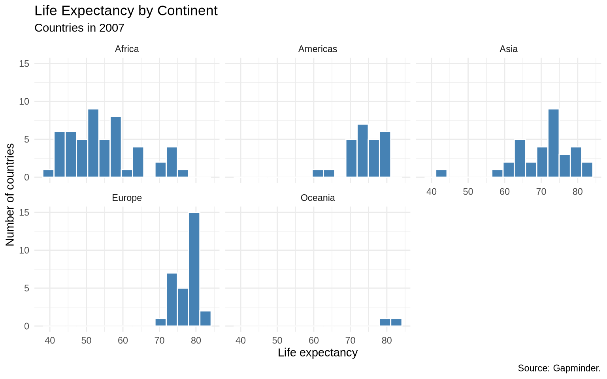
A boxplot gives a more compact comparison.
ggplot(data = gap_2007, mapping = aes(x = reorder(continent, lifeExp, FUN = median), y = lifeExp)) +
geom_boxplot(aes(fill = continent), show.legend = FALSE, alpha = 0.8) +
coord_flip() +
labs(
title = "Life Expectancy by Continent",
subtitle = "Countries in 2007",
x = NULL,
y = "Life expectancy",
caption = "Source: Gapminder."
) +
theme_minimal()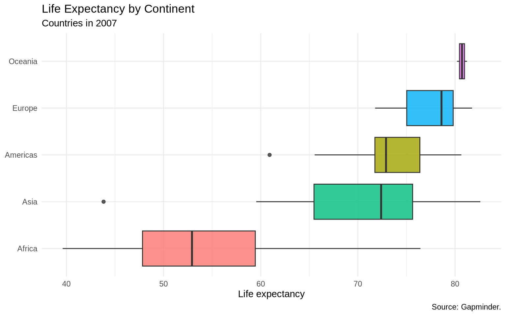
6.9 Choosing among distribution plots
Use a histogram when you want to show counts and binning is meaningful.
Use a density plot when you want to compare smooth distribution shapes.
Use a boxplot when you want compact comparisons across many groups.
No single distribution plot is always best. It is normal to make several versions while exploring the data.
6.10 Exercise 1: histogram
Use the built-in iris dataset.
- Create a histogram of
Sepal.Length. - Try
bins = 10,bins = 30, andbins = 50. - Add a title and readable axis labels.
- Write one sentence explaining which bin choice is easiest to interpret.
data(iris)
head(iris)# Write your plot here.6.11 Exercise 2: density plot
Use the built-in diamonds dataset.
- Create a density plot of
carat. - Map
cuttofill. - Use
alphaso the overlapping densities remain visible. - Try a faceted version with
facet_wrap(~ cut).
diamonds |>
select(carat, cut, price) |>
head(10)# Write your plot here.6.12 Exercise 3: boxplot
Use the built-in mpg dataset.
- Compare
hwyacross vehicleclass. - Reorder the classes by median
hwy. - Flip the coordinates if the labels are hard to read.
# Write your plot here.6.13 Extra: distribution intervals with ggdist
The ggdist package adds distribution geoms that combine several ideas at once. A half-eye plot shows the shape of a distribution while also marking a summary interval. It is useful when a boxplot feels too compressed but a full density plot takes too much space.
if (requireNamespace("ggdist", quietly = TRUE)) {
mpg |>
mutate(class = fct_reorder(class, hwy, .fun = median)) |>
ggplot(aes(x = hwy, y = class, fill = class)) +
ggdist::stat_halfeye(
adjust = 0.7,
width = 0.65,
point_interval = ggdist::median_qi,
show.legend = FALSE
) +
labs(
title = "Highway Mileage By Vehicle Class",
subtitle = "Half-eye plots show distribution shape and a median interval",
x = "Highway miles per gallon",
y = NULL
) +
theme_minimal()
}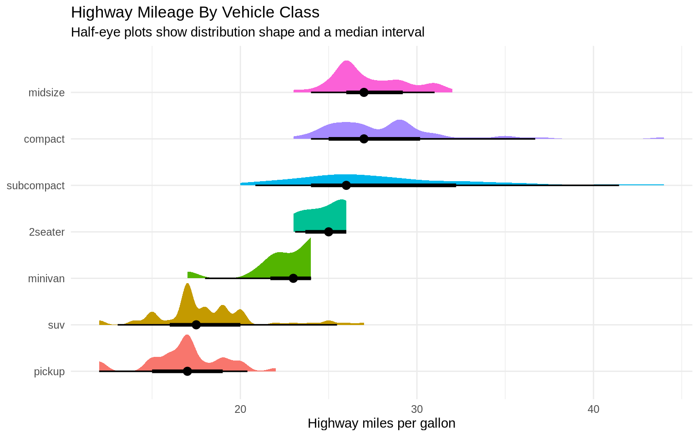
This is not a replacement for histograms, densities, or boxplots. It is another option when the goal is to show both distribution shape and uncertainty or spread in a compact display.
6.14 Extra: worked exercise variants
The next three chunks are short exercise-style examples. Each uses a built-in dataset and changes only one or two plotting decisions at a time.
iris |>
ggplot(aes(x = Sepal.Length)) +
geom_histogram(bins = 15, fill = "steelblue", color = "white") +
labs(
title = "Iris Sepal Length",
x = "Sepal length",
y = "Number of flowers"
) +
theme_minimal()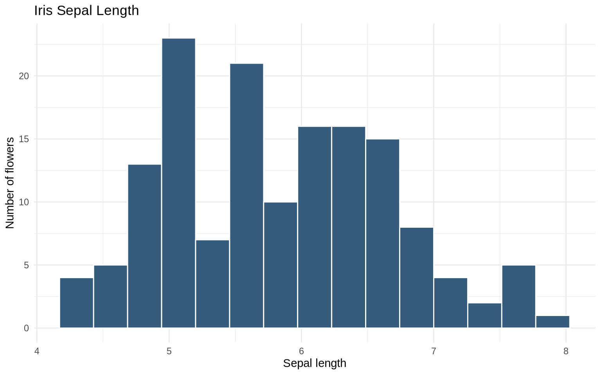
The same distribution can be separated by group. Here, fill = Species separates the histogram by species, while alpha makes overlapping bars partly transparent.
iris |>
ggplot(aes(x = Sepal.Length, fill = Species)) +
geom_histogram(bins = 15, alpha = 0.65, position = "identity") +
labs(
title = "Iris Sepal Length By Species",
x = "Sepal length",
y = "Number of flowers",
fill = "Species"
) +
theme_minimal()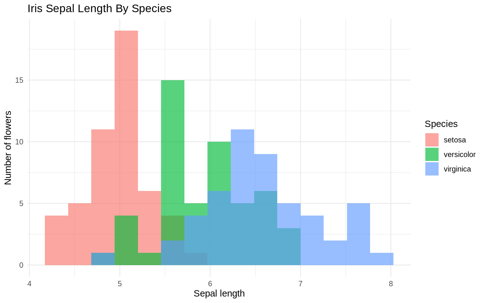
The diamonds dataset is larger, so density plots are often easier to compare than overlapping histograms.
diamonds |>
filter(carat <= 2.5) |>
ggplot(aes(x = carat, fill = cut)) +
geom_density(alpha = 0.35) +
labs(
title = "Diamond Carat By Cut",
subtitle = "Filtered to diamonds up to 2.5 carats",
x = "Carat",
y = "Density",
fill = "Cut"
) +
theme_minimal()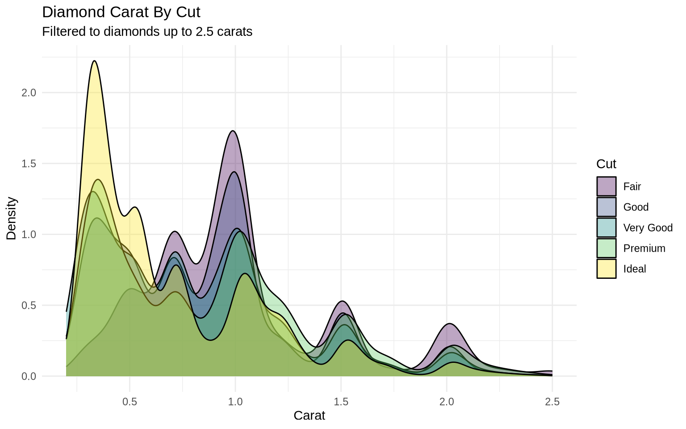
Boxplots are useful when the goal is a compact comparison of medians and spread across categories.
mpg |>
ggplot(aes(x = fct_reorder(class, hwy, .fun = median), y = hwy)) +
geom_boxplot(fill = "goldenrod", color = "gray30") +
coord_flip() +
labs(
title = "Highway Mileage By Vehicle Class",
x = NULL,
y = "Highway miles per gallon"
) +
theme_minimal()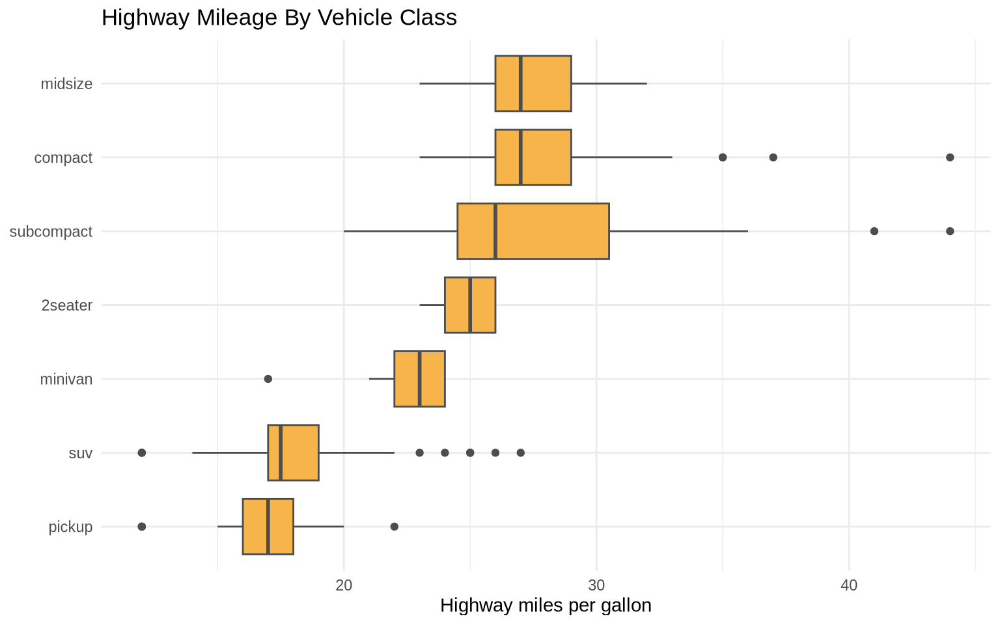
6.15 Extra: PISA score distributions
Individual-level data like PISA is well suited for distribution plots because 152,000 students provide enough data to make the shape of each distribution clearly visible.
pisa <- read_csv("Data/pisa/pisa_data_clean.csv", show_col_types = FALSE) |>
janitor::clean_names()A density plot comparing subject-score distributions shows where the three subjects have similar or different shapes.
pisa_subjects <- pisa |>
select(
Math = average_math_score,
Reading = average_reading_score,
Science = average_science_score
) |>
pivot_longer(everything(), names_to = "subject", values_to = "score")
ggplot(pisa_subjects, aes(x = score, fill = subject, color = subject)) +
geom_density(alpha = 0.25, linewidth = 0.8) +
labs(
title = "PISA Score Distributions by Subject",
subtitle = "PISA 2006, all countries combined",
x = "Score",
y = "Density",
fill = "Subject",
color = "Subject",
caption = "Source: PISA 2006."
) +
theme_minimal()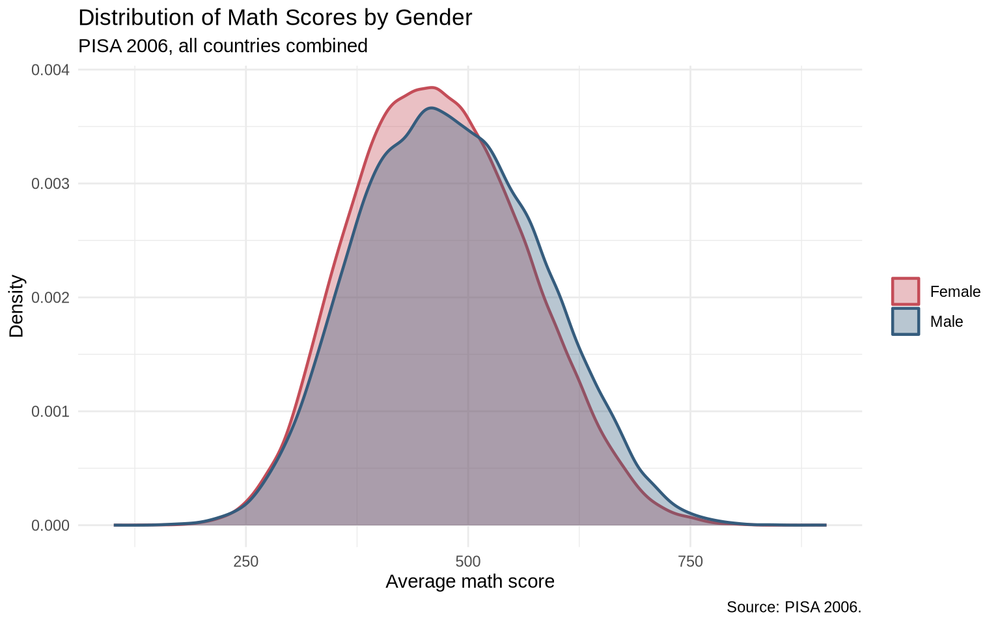
The distributions overlap substantially. The point of this plot is not to rank countries, but to compare the shape and spread of the three subject scores.
Faceting separates the subjects so each distribution has its own panel.
pisa_subjects |>
ggplot(aes(x = score)) +
geom_histogram(bins = 30, fill = "steelblue", color = "white") +
facet_wrap(~ subject) +
labs(
title = "Faceted PISA Score Distributions",
subtitle = "One histogram per subject",
x = "Score",
y = "Number of students",
caption = "Source: PISA 2006."
) +
theme_minimal()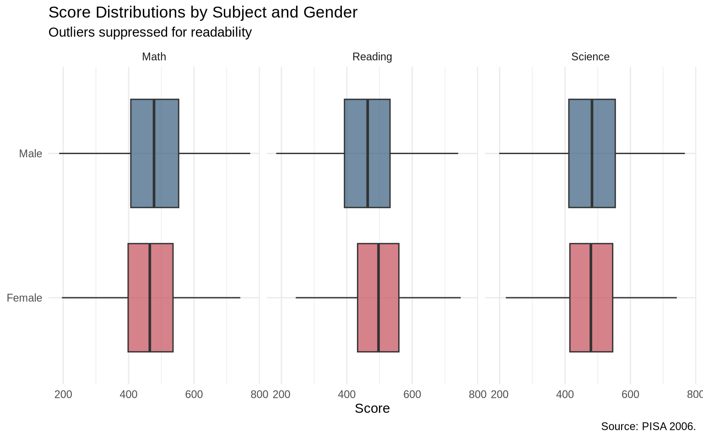
The faceted histograms make the subject comparison readable without placing every distribution on top of every other distribution.
6.16 Extra: heatmaps for dense two-variable distributions
When there are too many points, a scatterplot can turn into a cloud of overplotting. A two-dimensional bin plot counts observations inside rectangular bins.
ggplot(data = diamonds, mapping = aes(x = carat, y = price)) +
geom_bin2d(bins = 40) +
scale_fill_viridis_c(labels = comma) +
labs(
title = "Diamond Price and Carat",
subtitle = "Color shows the number of diamonds in each bin",
x = "Carat",
y = "Price",
fill = "Count"
) +
theme_minimal()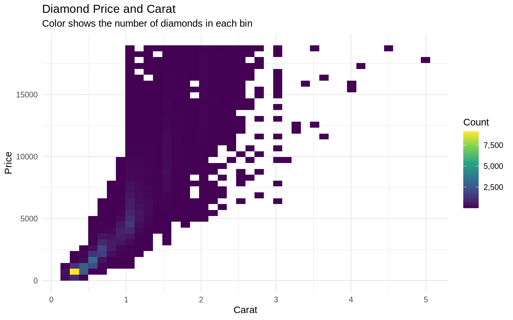
This is a distribution plot for two variables at once. It is useful when individual points would overlap too much.